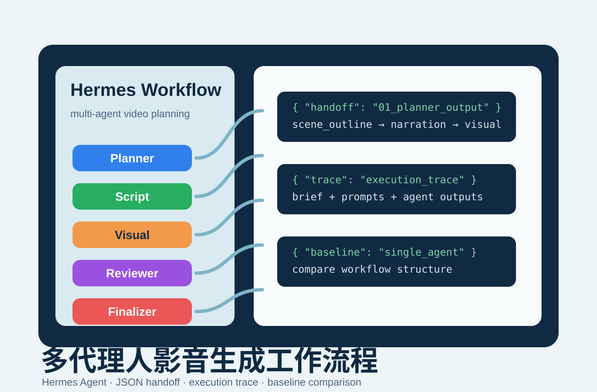

台南大學宣傳案例成果
以國立臺南大學資訊工程學系為主題，產出 60 秒形象宣傳影片企劃、字幕與最終影片成果。
Hermes Agent · Multi-agent Workflow · Video Planning
以 Hermes Agent 建立「國立臺南大學資訊工程學系 60 秒形象宣傳影片」的企劃流程，將需求、場景規劃、腳本、視覺方向、審查建議與最終整合拆成可追蹤的多代理人 handoff。

01
本專案的核心不是單一步驟產生影片，而是設計一套可以被檢查、分工與重跑的多代理人 workflow。每個 agent 負責不同階段，輸出以 JSON handoff 保存，最後再由 finalizer 整合成可用於影片製作的最終腳本，並以台南大學資工系 60 秒宣傳影片作為實際案例成果。
以國立臺南大學資訊工程學系為主題，產出 60 秒形象宣傳影片企劃、字幕與最終影片成果。
由 planner 建立場景骨架，script 撰寫旁白與字幕，visual 補上分鏡與素材需求，reviewer 提出修正方向，finalizer 完成整合。
execution trace 記錄 user brief、各 agent prompt 與 output，讓結果不只是最終文字，也能回溯產生過程。
除了多代理人流程，也保留 single-agent baseline，用來比較單一 prompt 與分工流程在結構清楚度上的差異。
02
整體流程採線性 handoff，每一階段的輸出都成為後續 agent 的輸入，避免單一 prompt 同時承擔企劃、腳本、分鏡、審查與整合。
| Agent | 主要任務 | 輸出重點 |
|---|---|---|
| Planner | 建立 project brief 與 scene outline。 | target audience、core message、time range、scene purpose。 |
| Script | 根據 scene outline 撰寫文字內容。 | narration、subtitle、estimated seconds。 |
| Visual | 將腳本轉化為視覺方向。 | storyboard、shots、asset list、capture notes。 |
| Reviewer | 提出優化問題與修改建議。 | 5 個 optimization questions、priority revisions、overall feedback。 |
| Finalizer | 吸收 reviewer 建議並整合最終稿。 | final summary、applied improvements、final script。 |
python hermes_orchestrator.py --title "國立臺南大學資訊工程學系 60 秒形象宣傳影片" --topic "國立臺南大學資訊工程學系（NUTN CSIE）形象宣傳" --audience 高中生 新生 一般觀眾 --message "展示國立臺南大學資訊工程學系結合理論與實作的學習特色，以及培養專業人才的系上價值" --tone "clear, positive, practical"03
主程式負責調度 Hermes CLI、讀取 prompts、整理 JSON 輸出並保存 trace。這讓 workflow 不只是一組概念性的 prompts，而是能在本機重複執行的流程。
agents/ 中每個 markdown 檔定義一個 agent 的角色、責任邊界與輸出 schema。
handoff/ 保存每階段輸出，讓後續 agent 讀取明確欄位，而不是只依賴散亂文字。
traces/ 保留 user brief、prompt 與 output，方便檢查每次執行的輸入與結果。
outputs/ 保存 final video、字幕與素材來源清單，讓企劃結果可接續到影片製作。
04
為了驗證 workflow 是否能從需求一路推進到可使用的影音成果，本專案選擇「國立臺南大學資訊工程學系 60 秒形象宣傳影片」作為案例。多代理人流程先整理受眾、核心訊息與場景節奏，再產生旁白、字幕、視覺方向與修正建議，最後形成可後製的完整腳本與影片輸出。
國立臺南大學資訊工程學系形象宣傳，面向高中生、新生與一般觀眾。
呈現資工系結合理論與實作的學習特色，以及培養專業人才的系上價值。
產出 60 秒影片企劃、最終整合腳本、依 workflow output 生成的 PNG 視覺素材、字幕檔、素材來源說明與 final video。
透過 handoff JSON 與 execution trace 保留每個階段的輸入、prompt 與輸出。
Planner 將主題、受眾與核心訊息轉換為 60 秒影片的 scene outline，定義每段時間範圍與目的。
Script Agent 沿用場景順序，為每段補上 narration、subtitle 與秒數估計，使內容符合短影片節奏。
Visual Agent 補上 storyboard、shots、asset list 與 capture notes，將文字腳本轉換為可拍攝或可剪輯的視覺規劃。
Finalizer 整合 reviewer 建議後形成最終腳本，再依 workflow output 使用 GPT 產生 PNG 視覺素材，最後進行剪輯並加入 outputs/subtitles.srt 字幕，輸出 outputs/final_video.mp4 作為成果展示。
05
Repository 中保留報告、handoff、trace、baseline 與影片輸出。報告原始檔為 Markdown，另轉出 HTML 與 PDF 版本；影片成品搭配字幕與素材來源清單保存。
single_agent_baseline.py 與 single_agent_output.json 保留單一 agent 對照流程與輸出。
06
single-agent baseline 用來觀察單一 prompt 直接完成任務時的輸出結構，並與多代理人 workflow 做對照。多代理人版本的優點在於每階段責任明確、輸出可追蹤，也能把 reviewer 的建議顯式地交給 finalizer 採納。
| 面向 | Single-agent baseline | Multi-agent workflow |
|---|---|---|
| 任務分工 | 單一 prompt 同時處理規劃、腳本與視覺。 | 五個 agent 分別負責規劃、腳本、視覺、審查與整合。 |
| 可追蹤性 | 主要依賴最後輸出。 | 每階段都有 JSON handoff 與 execution trace。 |
| 修正機制 | 缺少明確審查階段。 | Reviewer 先提出問題與建議，再由 Finalizer 吸收。 |
| 重現性 | 較難分辨各段內容來源。 | prompt、input、output 都能回溯。 |
專案以零付費 token 可完成為原則設計，repo 主要呈現 prompt、JSON handoff、execution trace 與最終整合腳本，並搭配自製或開放授權素材完成影片成果。